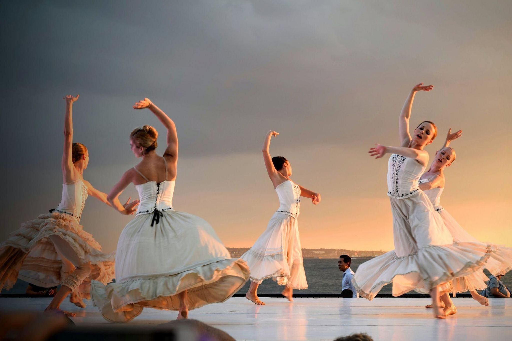

Bem-vindo ao DançaSP
Uma plataforma dedicada à promoção da dança em São Paulo, conectando pessoas a aulas e eventos gratuitos.
Nossa Missão
Promover o acesso democrático a uma ampla variedade de estilos de dança, incluindo Street Dance, K-pop, Balé e Dança de Salão, valorizando a riqueza cultural e artística de cada modalidade. Nosso compromisso é fomentar a diversidade e a inclusão, criando um espaço acolhedor e acessível para todos, independentemente de idade, experiência ou origem.
Como Funciona?
Através do nosso site, você encontra aulas gratuitas e eventos culturais, sendo direcionado aos sites de suas respectivas instituições.
Junte-se a Nós!
Seja você iniciante ou experiente, temos algo especial para você. Expresse-se através da dança e explore nossas aulas e eventos.
Ver Aulas